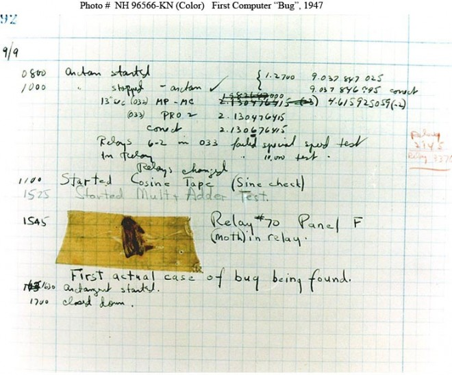
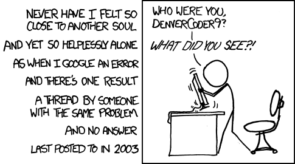

Workflow, Modelling & Webscraping: BEE2041
Data Science for Economics
27 March, 2026
Project Management & Workflow 🗂️
Today 📋
- Project management and replicability
- Workflow and project structure
- Automation with
make - Documentation
Some Background on Project Management 🏗️
- The nature of our projects will likely hugely vary, but it is not uncommon for projects to last multiple years and involve multiple people
- The needs of projects written for ourselves and those done in teams differ
- Given long time frames, it is worth investing in efficient work and communication:
- Good workflow
- Good project structure and code style
- Replicability
- Good documentation
Project Management: Why it Matters
In this block we will talk through these issues and connect them to an application in causal ML and webscraping
- These will be stylised examples
- But they give us reason to pause and examine each part of the toolchain carefully
- Optimised to data analysis in economics: in line with our particular interests in this course
- But most principles generalise far beyond economics
Useful Resources 📚
Two particularly good references:
“Coding for Economists” (Turrell, 2023): freely available, updated, Python-centric
“Code and Data for the Social Sciences: A Practitioner’s Guide” (Gentzkow and Shapiro, 2014) – a classic, research-focused but broadly applicable
Both are worth bookmarking; we will draw on them throughout these classes.
Workflow and Project Structure ⚙️
What is Workflow?
The programming languages we use are embedded in a more general workflow – which may include version control, typesetting/markdown, replication, and more
- Building a standardised workflow will be useful across all your projects
- It will vary depending on the project, collaborators, work locations, etc.
- At a minimum, workflow should be designed to:
- (a) Efficiently permit replication
- (b) Avoid manual functions that potentially introduce errors (e.g., copy & paste)
A Stylised Economic Data Project
A typical economic data analysis project might consist of:
- Version control: tracking all changes
- Data collection: often scraping or API calls
- Data cleaning: wrangling raw data into usable form
- Analysis and generation of results: running models
- Presentation: tables, figures, reports
- Replication materials: packaging everything for others
Tools for Each Step
It is very unlikely that you would want to use a single tool for all steps. A realistic project might look like:
| Step | Tool |
|---|---|
| Version control | git / GitHub |
| Data collection | Python (webscraping, APIs) |
| Data cleaning | Python + Pandas |
| Analysis | Python + scientific libraries |
| Presentation | Quarto / LaTeX |
| Replication | Makefile or similar |
Why Automate the Full Pipeline?
Ideally we would like to:
- Automate the process completely or as much as possible
- What if next month you want to update the data at step 1?
- What if a collaborator suggests a different cleaning step?
- Remember what was done in previous versions to revert if needed
Note
The first is about designing an efficient replication process (e.g., a Makefile); the second is version control (git), which we have already covered.
Workflow: make 🛠️
make is a Unix tool that specifies the full path a project follows: rather than running steps one by one, you run the Makefile with a single command
- The key value-add:
makeonly runs steps that are necessary - If nothing prior to step \(x\) has been altered,
makedetects this and only runs steps \(x, x+1, \ldots\) - A very complete discussion of Make with examples is provided by Jesús Fernández-Villaverde
- Gentzkow & Shapiro also have a nice discussion of shell script alternatives (chapter 2 here)
- Do not feel like you must do this (it is the advanced solution), but you need something to oversee the entire project
A Simple Makefile Example
# Makefile for a data analysis project
all: output/results.pdf
data/clean.csv: src/clean.py data/raw.csv
python src/clean.py
output/results.csv: src/analysis.py data/clean.csv
python src/analysis.py
output/results.pdf: report/paper.qmd output/results.csv
quarto render report/paper.qmdRunning make from the project root re-runs only what has changed. This is the foundation of a reproducible pipeline.
Modern Alternatives: Snakemake & DVC
make is powerful but dated. Modern alternatives exist:
- Snakemake: Python-native workflow manager, popular in bioinformatics and increasingly in economics; handles parallelism cleanly
- DVC (Data Version Control): extends git to handle large data files and ML pipelines; integrates with cloud storage
- Prefect / Airflow: for production-grade orchestration
For many research projects, we may be happy with just some runner file like runAll.py, but we need something to automate “build”.
Documentation 📝
Documentation: Why It Matters
Tip
“You will probably spend more time reading code than writing code.” — Jesús Fernández-Villaverde
Research projects should be documented extensively:
- Globally — using a
READMEfile at the project root - Locally — commenting within scripts
Both are important; neither alone is sufficient.
Commenting in Scripts
All serious programming languages allow inline comments:
- Comments are instructions for human readers – the machine ignores them (well, it used to…)
- Should be used throughout wherever something is not immediately obvious
- At minimum, section-level explanations should always be present
- Comments should be maintained alongside code: stale comments are misleading
- Err on the side of verbosity future you will thank present you!
# ── Section 1: Load and merge raw data ─────────────────────────────────────
# We merge the household survey (hhsurvey) with the administrative records (admin)
# using the household ID (hh_id). Some households appear only in one source;
# we keep all observations and flag missings in the merged indicator below.
df = pd.merge(hhsurvey, admin, on='hh_id', how='outer', indicator=True)README Files
A README file in the main directory gives global instructions for a project:
- Explains procedures followed from start to finish
- Lists external libraries/dependencies needed
- Describes the directory structure
- Provides contact details and citation information
Note
This should be the first thing you look for when you download someone else’s code. It may be called README, README.txt, README.md, …
A good short resource on README best practices is available here.
A Good Directory Structure
Consistency in structure matters as much as content. A typical economic project might look like:
project/
├── README.md
├── Makefile
├── data/
│ ├── raw/ ← never modified after collection
│ └── clean/ ← output of cleaning scripts
├── src/
│ ├── 01_clean.py
│ ├── 02_analysis.py
│ └── 03_figures.py
├── output/
│ ├── tables/
│ └── figures/
└── report/
└── paper.qmdThe key principle: raw data is sacred. Never overwrite it (consider limiting permissions).
Style, Testing & Debugging 🐛
This section📋
- Consistent programming style
- Automation and abstraction
- Testing, debugging, and profiling
Programming Style 🎨
Consistent Style
There are many frequently used stylistic choices in programming – often not enforced by syntax but still very important:
- People develop preferred directory structures for projects
- Delimiter choices for data (commas, tabs, pipes)
- Spacing in code is often user-specific (though some languages enforce rules)
- Intelligent variable naming simplifies work considerably
Tip
Even if there are no rules, internal consistency is key: it enables re-use of standardised code and reduces cognitive load.
Spacing and Line Length
In some languages, spacing is syntactically significant:
- Python uses indentation to delimit loops and conditional blocks
- Fortran reserves initial spaces for particular statements
- The convention of not exceeding 80 characters per line is very common. We may ask: Why?

Institutions are ingrained and slow to change!
Python Style: PEP 8 & Beyond
Python has an official style guide: PEP 8
Key recommendations: - 4 spaces for indentation (never tabs) - Maximum line length of 79 characters (PEP 8) or 88 (Black formatter) - Two blank lines between top-level functions/classes - One blank line between methods
Tooling that enforces this automatically:
Variable Naming
Variable naming is itself a form of documentation:
- Good naming makes things dramatically easier; bad naming is a disaster
- Consider a binary variable for sex at birth — potential names:
{var1, gender, female} - Conventions:
snake_case(Python standard) orcamelCase(more common in JS/Java) - Consistency within a project is essential
Automation and Abstraction 🤖
The Core Idea
Where possible, automation (avoiding human interaction) and abstraction (writing code flexible for many circumstances) should be embraced:
- Consider calculating \(E(Y) = \sum_{x=x_{\min}}^{x_{\max}} E(Y|X=x) \cdot P(X=x)\)
- One could tabulate \(X\) and compute expected values by hand
- Better: iterate through all values of \(X\) automatically (AUTOMATION)
- Best: write a function to do this for any two variables (ABSTRACTION)
Why Functions?
Writing functions is central to both automation and abstraction:
- Separates and re-uses key code blocks
- Allows focus on perfecting code once, then reusing optimised versions
- Everything in a research project should be replicable by machine
Warning
If you ever find yourself typing commands into a Python shell thinking “I’ll remember what I did”… you are in trouble. Write it down as a script!
LLMs and Workflow: Opportunities and Risks
AI coding assistants (GitHub Copilot, Claude, ChatGPT) have become a real part of modern workflows:
Opportunities:
- Accelerate boilerplate code writing
- Debug error messages quickly
- Translate across languages (e.g., Stata → Python)
Risks:
- Generated code may be subtly wrong or out of date
- Can obscure understanding if used as a crutch
- Attribution and reproducibility concerns
Important
LLMs do not replace the need to understand your code. Always verify, test, and understand what is generated.
Testing, Debugging & Profiling 🔍
Three Questions Every Programmer Faces
As soon as you have written some code:
| Question | Term |
|---|---|
| My code runs, but does it do what it should? | Testing |
| My code does not run. Why? | Debugging |
| My code runs very slowly. Why? | Profiling |
These are distinct activities requiring distinct approaches.
Testing
Testing is a constant process requiring vigilance:
- In empirical applications, test whether code returns correct values on simulated data where the answer is known
- Test modularly: each script should be tested standalone
- Similarly, each argument to a function should be tested
- Consider proactively building in assertions:
def compute_unemployment_rate(n_unemployed, n_labour_force):
rate = 100 * n_unemployed / n_labour_force
assert 0 <= rate <= 100, f"Rate {rate:.1f}% is out of bounds — check inputs"
return rateModern Python: use pytest for systematic test suites.
Debugging
Debugging refers to finding errors that prevent a script from running:
- Read error messages carefully: they usually tell you what went wrong and where
- Consult the documentation as a first step
- As a last resort, paste the exact error into a search engine (or ask an LLM)
- Warnings: even when a script runs — should be investigated; they often signal inefficiencies or incorrect results
Tip
Do not think that just because a script runs, it is correct. Always return to testing.
The Famous Computer Bug 🐛

The famous “computer bug” from Grace Hopper’s notebook (1947)
The term “bug” has been with us for almost 80 years.
Debugging in Practice: The Stack Trace
---------------------------------------------------------------------------
KeyError Traceback (most recent call last)
Cell In [4], line 3
1 df = pd.read_csv('data/clean.csv')
2 # Filter to treated observations
----> 3 treated = df[df['treatment_indicator'] == 1]
KeyError: 'treatment_indicator'Read bottom to top: the error is KeyError: 'treatment_indicator'. The column does not exist. Check your column names with df.columns.
Wisdom of the Ancients 🦉

When you find that Stack Overflow has no answer…
Profiling
Profiling is about finding hot spots, ie bottlenecks, in code:
- Only begin optimising after you are sure the code is correct
- Many languages have profilers: Python has
cProfileandline_profiler - In Jupyter notebooks, use
%%timeor%%timeitto measure cell execution time - Do not over-optimise: there is a real trade-off between machine time and programmer time
An application to project management — Causal Forests 🌲
Today 📋
- BRIEF Motivation: why heterogeneous treatment effects?
- The ATE and CATE
- Causal forests: a rough overview
- Applying the workflow: project structure in practice
An Application: Causal Forests
To see an example of a complete stylised project, let’s consider heterogeneity in some treatment effect:
- This is more on the modelling side of data science
- We will use a tool from causal machine learning known as causal forests (Athey, Tibshirani & Wager, 2019; Wager & Athey, 2018)
- We will briefly discuss the econometrics at a high level
- Note: this course is not about formal modelling – if you find this interesting, please consider taking further ML and causal econometrics courses (very happy to talk about this with you in office hours)!
The Starting Point: Average Treatment Effect (ATE) 📐
We are often interested in pinning down an average treatment effect (ATE):
- Provides the impact of some treatment on outcomes in a population
- Formally defined as: \(\text{ATE} = \mathbb{E}[Y_i(1) - Y_i(0)]\)
- If treatment is assigned exogenously (e.g., randomly): \(\text{ATE} = \mathbb{E}[Y_i|T_i=1] - \mathbb{E}[Y_i|T_i=0]\)
- i.e., the treatment effect is simply the difference in mean outcomes between those treated and not
- This is often already a challenging parameter to nail down!
Conditional Average Treatment Effect (CATE) 🎯
But, we also care about heterogeneity: who gains and who loses from an intervention?
\[\text{CATE}(X) = \mathbb{E}[Y(1) - Y(0) \mid X]\]
- Measures the average treatment effect conditioned on covariates \(X\)
- Provides insight into how treatment effects vary across subgroups
- Policy relevance: targeting interventions to those who benefit most
Note
This is a significantly harder parameter to estimate than the ATE: standard regression struggles because of overfitting and the “curse of dimensionality”.
Why Can’t We Just Use OLS?
Consider estimating \(\tau(x) = \mathbb{E}[Y(1) - Y(0) \mid X = x]\) by running separate regressions within subgroups:
- With many covariates, cells become very thin
- Partitioning is arbitrary (which variables? how many bins?)
- OLS with interactions: degrees of freedom collapse rapidly
Machine learning offers tools to learn heterogeneous effects from data in a disciplined way — this is where causal forests come in.
Causal Forests: A Rough Overview 🌳
A random forest learns heterogeneity via recursive partitioning of the data:
- Causal forests extend random forests for estimating heterogeneous treatment effects (Wager & Athey, 2018; Athey, Tibshirani & Wager, 2019)
- We ask the data: which units are most similar in terms of their treatment effects?
- Effectively: split data to find units with the most similar effects, building up a “tree”
- Each decision tree is trained to partition data based on covariates and treatment assignments
- Each tree “learns” the relationship between features, treatment, and outcome
The Honest Tree
A key insight in causal forests: honesty
- Standard trees are “greedy”: they can overfit to the training data
- Causal forests use sample splitting: one half finds the best partition (tree structure), the other half estimates treatment effects within leaves
- This avoids in-sample bias and yields valid confidence intervals
- The forest then aggregates many such honest trees to reduce variance
Tip
This is what separates causal machine learning from predictive ML: we want valid inference, not just low prediction error.
Let’s get into this now…
We will explore real data from a large experiment (Oreopoulos, 2011).
Key References 📖
Wager, S. & Athey, S. (2018). Estimation and Inference of Heterogeneous Treatment Effects using Random Forests. Journal of the American Statistical Association, 113(523), 1228–1242.
Athey, S., Tibshirani, J. & Wager, S. (2019). Generalized Random Forests. Annals of Statistics, 47(2), 1148–1178.
Chernozhukov, V. et al. (2018). Double/Debiased Machine Learning for Treatment and Structural Parameters. The Econometrics Journal, 21(1), C1–C68.
EconML documentation: econml.azurewebsites.net
Oreopoulos, P. (2011). Why Do Skilled Immigrants Struggle in the Labor Market? A Field Experiment with Thirteen Thousand Resumes. American Economic Journal: Economic Policy, 3(4):148–71.
Webscraping 🕸️
Today 📋
- What is webscraping and why is it useful?
- Considerations before scraping
- Core tools:
requests,BeautifulSoup, regex - More advanced tools:
Selenium,Playwright - A worked example
What is Webscraping?
Essentially: harvesting data stored on the web in irregular or highly dispersed format
- When undertaking economic/data science analysis, we want regular data in rows and columns
- The web contains vast amounts of data that has never been packaged as a clean CSV
- Webscraping is the process of collecting and structuring it
Note
Two general steps: 1. Loop through nested URLs to reach many source HTML pages 2. Parse HTML (or JSON, XML) and format into a usable structure
Why is This Useful for Economists?
Often data is not stored as a CSV or standardised format:
- In some cases, data does not exist in any centralised form
- This opens up entirely new types of data we might not have considered
- The majority of economics papers now use “novel” data (i.e., not purely survey-based)
Real examples from my own work (simple real-use cases):
- Downloading, unzipping and merging 1,000+ DHS surveys, up-to-date at the moment of scraping
- Downloading all 30,000+ NBER working papers for text analysis
- Downloading election results: India, Philippines
- Collecting standardised statistics across many geographies and time periods
Economics Papers Using Scraped Data
Notable examples in the literature:
- “The Billion Prices Project” — Cavallo & Rigobon (2016): online prices scraped from hundreds of retailers to measure inflation in real time
- “Nowcasting the Local Economy” — Glaeser et al. (2017): Yelp data scraped to measure local economic activity
- “Measuring Economic Policy Uncertainty” — Baker, Bloom & Davis (2016): automated text analysis of newspaper archives
- “Do Expiring Budgets Lead to Wasteful Spending?” — Liebman & Mahoney (2017): federal contracting data scraped from USASpending.gov
- Many others: see Table 1 of Edelman (JEP, 2012)
Three Considerations Before You Scrape
Before starting any webscraping project, ask:
- Is the target standardised enough?
- Are there legal limits?
- Are there technical limits?
Also: do you even need to scrape?
- Some websites provide data in a central download option already
- Many sites have APIs (sometimes free, sometimes paid) that make the task much easier
- The site IDEAS/RePEc is a great example of this
- Owners of sites are sometimes happy to provide data upon request
1. Is the Target Standardised Enough?
Webscraping requires interacting with source code (HTML or XML) of websites:
- Much harder if you are scraping many disparate websites rather than many pages within a single site
- More challenging if the source format changes over time (e.g., PDFs in early years, machine-readable in later years)
- Some websites are stored on unstable servers — plan for failures
Tip
A good webscraping script handles errors gracefully — use try/except blocks and build in retry logic. Never assume a request will succeed.
2. Are There Legal Limits?
Some websites do not allow webscraping — either because they consider information proprietary, or to prevent robot traffic from overloading their servers:
- The law is complex and jurisdiction-dependent
- There are legal precedents — e.g., hiQ Labs v. LinkedIn (US Ninth Circuit, 2022) found scraping publicly accessible data to be lawful, but this varies by context
- Where possible: seek permission, read Terms of Service
- Always check the
robots.txtfile (e.g.,https://example.com/robots.txt)
# robots.txt example
User-agent: *
Disallow: /private/
Crawl-delay: 103. Are There Technical Limits?
Many websites have safeguards against excessive crawling (CAPTCHAs, rate limiting, IP blocking):
- Simple limit: rate limiting – slow down your requests
- IP blocking: more serious; could use proxies, but this is technically non-trivial
- CAPTCHAs_ “Completely Automated Public Turing test to tell Computers and Humans Apart” – designed specifically to block automated access
Important
Be a polite scraper: add delays between requests (time.sleep()), identify your bot in headers, and never hammer a server.
Core Webscraping Tools 🛠️
The Python Webscraping Stack
The typical workflow:
- Use
requeststo download the HTML of a page - Use
BeautifulSoupto parse and navigate the HTML structure - Use
re(regex) for fine-grained text matching - Store results in a
pandasDataFrame
HTML: A Quick Primer
To scrape a page, you need to understand its structure:
<html>
<body>
<div class="article">
<h1>Article Title</h1>
<p class="date">18 March 2026</p>
<table id="results">
<tr>
<td>GDP Growth</td>
<td>2.3%</td>
</tr>
</table>
</div>
</body>
</html>Tags (<div>, <p>, <table>) have attributes (class, id) that help us locate data. Always use your browser’s developer tools (right-click: Inspect) to explore the structure.
An Aside: Regular Expressions 🔤
Regular expressions (regex) are a standardised way to match patterns in text:
- We have seen and discussed these preeviously. Python has it’s own implementation
- Most languages with string capabilities have regex libraries
- While precise syntax varies by language, there is a standard set of tools
- They can be simple but can become very complex
import re
text = "GDP grew by 2.3% in Q3 2025, compared to 1.8% in Q2 2025."
# Find all percentages
percentages = re.findall(r'\d+\.\d+%', text)
print(percentages) # ['2.3%', '1.8%']
# Find years
years = re.findall(r'\b20\d{2}\b', text)
print(years) # ['2025', '2025']A useful resource for Python regex: docs.python.org/3/howto/regex.html
Let’s see an example…
We will implement a webscrape in real time – this can be quite simple in some cases!
BeautifulSoup: Parsing HTML
A basic (fictitous) example…
from bs4 import BeautifulSoup
soup = BeautifulSoup(html_content, 'html.parser')
# Find a single element
title = soup.find('h1').text
# Find all elements matching a selector
all_rows = soup.find_all('tr')
# CSS selectors (often cleaner)
date = soup.select_one('p.date').text
# Navigate the tree
article_div = soup.find('div', class_='article')
table = article_div.find('table', id='results')
# Extract text from all cells in a table
cells = [td.text.strip() for td in table.find_all('td')]Let’s go back to our example and see that this can help!
Beyond Static Pages: JavaScript-Rendered Content
Many modern websites render content dynamically using JavaScript_ the HTML you download with requests may be empty or incomplete:
- Single-page applications (React, Vue, Angular)
- Lazy-loaded content (data loaded as you scroll)
- Content behind login forms
Solution: “headless browsers”: automate a real browser that executes JavaScript:
- Selenium: the classic, widely used
- Playwright: modern, faster, more reliable; increasingly preferred (full transparency, I have not used this one…)
Selenium / Playwright: When to Use Them
from playwright.sync_api import sync_playwright
with sync_playwright() as p:
browser = p.chromium.launch(headless=True)
page = browser.new_page()
page.goto("https://dynamic-site.com/data")
# Wait for specific content to load
page.wait_for_selector('table#results')
# Get the fully rendered HTML
html = page.content()
browser.close()
# Now parse with BeautifulSoup as normal
soup = BeautifulSoup(html, 'html.parser')A Note on LLMs and Webscraping (2025)
A new approach is gaining traction: using LLMs to extract structured data from HTML directly:
- Tools like Crawl4AI, Firecrawl, and the Anthropic API can be used to parse unstructured HTML into structured data
- Particularly useful when website structures vary or change frequently
- Still requires careful prompting and validation
# Conceptual example: LLM-based extraction
import anthropic
client = anthropic.Anthropic()
response = client.messages.create(
model="claude-sonnet-4-20250514",
messages=[{
"role": "user",
"content": f"Extract all paper titles and authors from this HTML as JSON:\n\n{html_snippet}"
}]
)Note
This can be powerful but is slower, more expensive, and requires validation: use with care.
Where to From Here? 🚀
This unit has discussed a range of tools broadly within a programming workflow. But as always, mastery comes from practice:
- Final Project: A nice place to practice thinking about workflow in a formal way. Advice: do what is interesting to you
- Further reading:
- Questions? Write me at dcc213@exeter.ac.uk or during office hours (I will maintain the Monday block for a few weeks, though feel free to write for other times)
Fin!
Thank you!